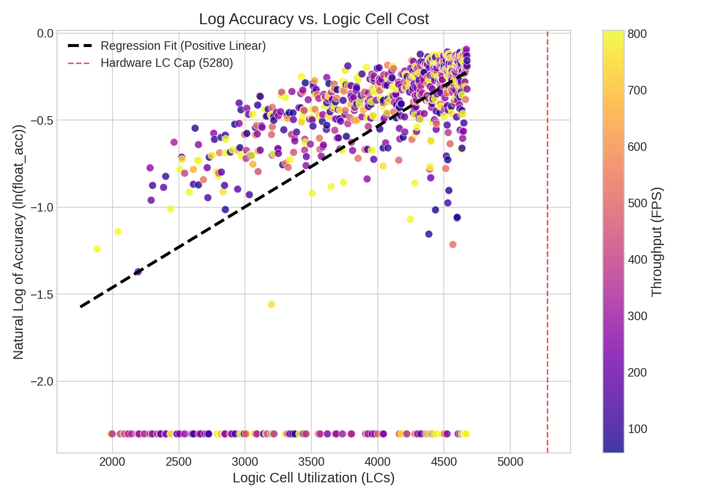
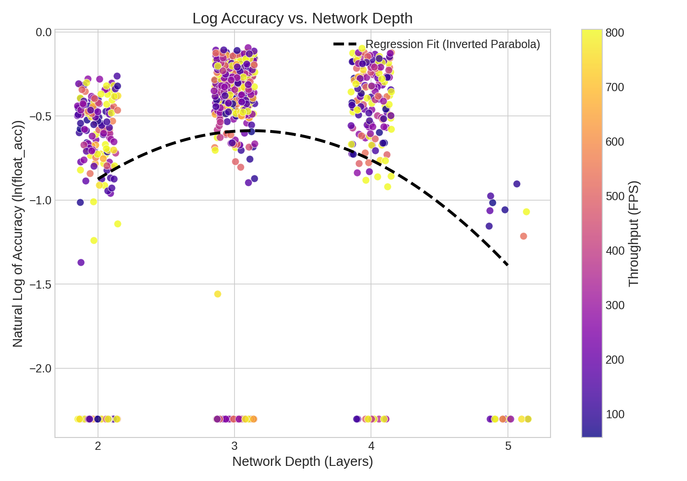
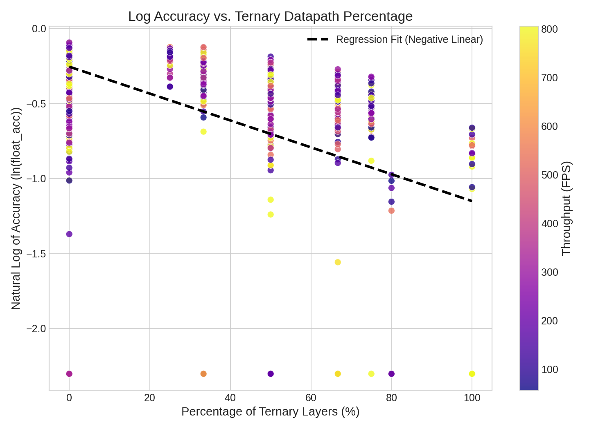

Chapter 7: Design Space Exploration
While this co-design flow enables rapid and informed iteration via manual trial-and-error, the strict hardware constraints of the FPGA lend themselves to an exhaustive design space exploration. Not only does this save design time, but it also provides us the globally optimal network, balancing throughput, LC cost, and network accuracy.
In order to determine all possible networks that fit within the 5280 LC, 30 BRAM, and 8 DSP design constraints, a depth-first search is performed, iterating over all possible network lengths within budget. However, running make stat-design at each branch of the search would quickly scale out of control. For this reason, replacing this dynamic synthesis with a lightweight analytical model is ideal for on-the-fly LC estimations.
Convolution Prediction
For every combination of parameters in the convolution, pooling, and classifier layers, a realistic range was swept via isolated Yosys runs, terminating when exceeding 5280 LC. To create a fast analytical model, the resulting resource utilizations (LUTs and FFs) from the synthesis logs were fitted via linear regression. Experimentation revealed that the bit-width precision costs (input and weight bit-widths) were mathematically independent from the spatial multiplication count. By extracting unique coefficients for each precision corner, the resulting regressions yielded an R2 > 99%.
The equations demonstrate that in the combinational unrolled layers, there are constant, predictable overheads for the spatial multiplication count, routing the output channels, routing the input channels, and a fixed baseline to implement control logic. Flip-flops can be predicted using a similar equation; however, because the input channels are summed using a pipelined binary adder tree, the number of staging registers grows logarithmically. The same functions hold for the sequential DSP layers, however since weight bits are fixed, DSPCount replaces it as the independent predicting variable. Because the LUT-based spatial multipliers are replaced with a single DSP, the coefficient plummets. The remaining LUTs are utilized mainly for routing overhead, while FFs increase due to the added data staging and control logic required to drive the DSP in 16x16 multiplication mode.
Classifier Prediction
Since the classifier layer contains its own 1x1 convolution, the predicting equations resemble those of the convolution module, modeling multiplication cost using input channels, class count, and weight bitwidth. However, the additional global maximum pooling and its underlying comparator tree must be modeled as well. While the spatial storage required for the global pooling scales linearly with the input channels, the comparator tree performs a binary reduction over the class outputs, meaning its hardware footprint scales logarithmically with the class count.
Pooling and Overhead Prediction
Because pooling layers lack any weights, and due to channels and precision remaining fixed between input and output, hardware prediction can be simplified to a standard look-up table for all realistic combinations of input bits, input channels, and pooling mode.
Overhead measurements included the UART IP, skid buffer, and class framer, while the deframer required sweeping over the four possible input sizes on the 8 bit UART bus.
Depth-First Search Network Generation
FPGAs are composed primarily of Logic Cells (LCs), which serve as the fundamental building blocks of the architecture. On the iCE40, each LC contains a 4-input Look-Up Table (LUT4), a dedicated Flip-Flop (FF), and optional carry logic. During synthesis, high-level hardware descriptions are mapped down into these 5,280 available cells. Crucially, the LUT and FF counts reported by the synthesizer are not mutually exclusive. The architecture is designed to pack efficiently: if a combinational logic path (LUT) directly feeds into a staging register (FF), the synthesizer will merge both operations into a single shared Logic Cell. Consequently, the total Logic Cell utilization is rarely the strict sum of the two resources, but is instead tightly bounded by the maximum of the two.
Using this predictive LC estimate, a depth-first search of the design space was performed. The algorithm initialized from a set of realistic architectural base cases, and iteratively extended the network depth. Once the predicted hardware footprint reached the physical LC capacity (minus a safety margin for top-level routing overhead), the search terminated that branch by appending the final classifier layer.
Algorithm 7.1: Generate Base Case Networks
--------------------------------------------------
1: S ← ∅ // Initialize empty set of networks
2: for all oc ∈ {2, 4, 6, 8, 9, 10, 12} do // Evenly divisible for DSPs
3: for all ob ∈ {2, 3, 4, 5, 6} do
4: ib ← 1, ic ← 1 // Binary, single channel image format
5: wb ← 4 // Optimal precision vs. lc cost
6: dsp ← 0 // Single-cycle Layer 0 for throughput
7:
8: lcconv ← predict_conv(ic, oc, ib, wb, dsp)
9: lcpool ← predict_pool(ib=ob, ic=oc, mode=max)
10: lctotal ← lcconv + lcpool
11:
12: if lctotal ≤ LC_CAP then
13: cfg ← build_cfg(oc, wb, ob, dsp)
14: S ← S ∪ {(lctotal, cfg)} // Store valid network in set
15: end if
16: end for
17: end for
18: return sort(S)
Algorithm 7.2: Generate Networks via Depth-First Search
---------------------------------------------------------
1: S ← ∅ // Initialize empty set of complete networks
2:
3: function Extend(L, lcused, dsp_rem)
4: (ocprev, obprev) ← last layer of L
5: for all oc ∈ {c ∈ {2, 4, 6, 8, 9, 10, 12} | c > ocprev} do // Grow channels
6: for all ob ∈ {w ∈ {2, 3, 4, 5, 6} | w ≥ obprev} do // Grow bit-width
7: wb ← 8 // ROM Width
8: dsp ← allocate_dsp(...) // Assign DSP if dsp_rem ≥ 1
9:
10: lcconv ← predict_conv(ic=ocprev, oc, ib=obprev, wb, dsp)
11: lcpool ← predict_pool(ib=ob, ic=oc, mode=max)
12: lctotal ← lcused + lcconv + lcpool
13:
14: if lctotal ≤ LC_CAP then
15: Lnew ← L ∪ {(oc, wb, ob, dsp)}
16: S ← S ∪ {(lctotal, build_cfg(Lnew))} // Store candidate
17:
18: if spatial dimensions ≥ 2 then // Minimum pool size
19: Extend(Lnew, lctotal, dsp_rem - dsp) // Recurse deeper
20: end if
21: end if
22: end for
23: end for
24: end function
25:
26: // --- Main Execution ---
27: for all base layer L0 ∈ Generate Base Case Networks() do
28: Extend({L0}, lcL0, DSP_CAP)
29: end for
30:
31: S ← deduplicate_by_architecture(S) // Keep lowest LC DSPs
32: S ← {net ∈ S | |net.layers| ≥ 2 and lc ≤ (LC_CAP · 0.9)}
33: return sort(S)
To aggressively prune the search space and filter out inherently suboptimal architectures, several structural heuristics were enforced during traversal. For each successive layer, the activation bit-width and channel count were constrained to be monotonically increasing (preventing information bottlenecks), and channel dimensions were restricted to highly divisible integers (2, 4, 6, 8, 9, 10, 12) to allow for better DSP allocation. Furthermore, the first layer was strictly enforced as a purely combinational block with 4-bit weights, whereas all succeeding layers were mapped to sequential architectures utilizing 8-bit weights and a single allocated DSP macro. Maintaining a combinational layer at the network's head supports high initial throughput where spatial resolution is highest, while limiting deeper sequential layers to a single DSP ensures maximum LUT efficiency, preserving the flexibility for designers to optimize throughput later by allocating additional DSPs if the budget allows. These topological constraints align directly with the empirical findings of the previous section, drastically reducing search time while consistently yielding high-quality, physically realizable networks. This search resulted in roughly a thousand valid networks that were each synthesized, reporting the actual LC cost.
Logic Cell Prediction
While this theoretical packing holds true for small, localized designs, it was discovered that larger networks, which theoretically fit within hardware caps, were often unable to be physically routed by Nextpnr. As routing congestion grows between disparate modules, the toolset is often forced to duplicate logic to meet timing constraints, breaking the ideal 1:1 packing assumption. Because an accurate routing-aware assessment of LC is critical for a proper design space exploration, end-to-end syntheses were conducted over a diverse dataset of complete neural networks to extract their actual, post-route LC costs. By evaluating the aggregated LUT and FF counts across the network, regression analysis was performed to determine which resource served as the dominant predictor of final hardware utilization.
The results were striking: once the heavy arithmetic logic was absorbed by the DSP macros, the predicted LUT count lost nearly all of its predictive power. Instead, the total Flip-Flop count, which serves as a direct proxy for pipeline depth and interconnect width, proved to be an exceptionally strong indicator of routing congestion. A single-variable regression on the Flip-Flop count yielded an R2 of 0.97 across 191 fully-routed networks. The maximum outlier observed being -0.09 is reflected in allocating 9% of the logic cap towards unused headroom. Ultimately, the final, routing-aware Logic Cell cost can be accurately modeled.
With this robust, routing-aware heuristic, the depth-first search can confidently prune architectural configurations that would theoretically fit, but practically fail during the physical Nextpnr routing phase.
Network Accuracy Prediction
The final phase in the design space exploration was predicting pre-training accuracy from only the neural network architecture. The previously described improvements to the DFS resulted in 964 valid networks, which were iteratively trained over a standardized schedule. Many predicting variables were experimented with including total bandwidth, overall network growth, and throughput. However the three greatest predictors were the total LC utilization, ternary datapath percentage, and network depth yielding a pretraining predictive capability of 0.53 R2.



In Figure 7.1, the positive linear relationship between trained floating point accuracy and LC is clear. Unsurprisingly, networks that fully utilize all available resources perform better, however accuracy peaking at a network depth of three in Figure 7.2, indicates that allocating the logic cells towards fewer wider layers outperforms longer thinner networks. The reason why is displayed in Figure 7.3, as longer networks tend to have critically imprecise activations, relying too heavily on ternary activations, which while useful in early layers, lead to vanishing gradients when utilized in deeper layers.
From a designer's perspective, throughput is just as critical for deploying a live model, as introducing downstream bottlenecks directly affects the entire system. While not the primary metric being measured by this statistical model, the structural diversity of generated networks in terms of depths, channel growth rates, and bit-widths yields a wide range of throughputs the designer may select from. Because throughput (frames per second) is largely independent of accuracy but entirely dependent on architecture, this variety enables designers to optimize for accuracy and from the top ranking candidates, select the network with the highest throughput.